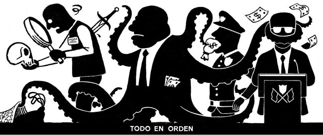

🌍 Deus: Fim (Espiritualismo) vs. Meio (Materialismo)
O materialista não quer Deus, ele quer o que Ele pode dar.
A Definição de Materialista e Espiritualista
- Quando o mundo é o Fim e Deus é o meio, você é um materialista.
- Quando Deus é o Fim e o mundo é apenas um meio, você é um espiritualista.
Você vai ver quem é o espiritualista (esteja dentro de uma religião ou não) e o que ele busca realmente como finalidade de sua vida.
A Visão Materialista Comum
O que a gente vive hoje, em geral (às vezes dentro de religiões, às vezes fora) é: o Fim é o mundo, são coisas materiais, uma vivência confortável e prazerosa e isso tudo como alvo de vida.
O fim é o mundo, e Deus é o patrocinador desse "egocentrismo". "Foi Deus quem me deu". A chave que a gente tem é essa: Deus é um patrocinador, Ele é tido como um "meio".
Se ele não tivesse necessidade, se pudesse conquistar essa sobrevivência material e essa evidência sozinho, se já tivesse conquistado, Deus não servia pra nada. Ele quer que Deus satisfaça seus desejos materiais. Alguém diferente disso, é muito raro de se encontrar.
A relação desse tipo com Deus é pelo que Ele pode conceder ou por temor do que Ele pode tirar. Isso é ser materialista, esteja ele onde estiver.
O Sentido de Vida Espiritualista (Deus é o Fim)
Aqui está o sentido da vida onde Deus é o Fim.
- Eu quero cada vez mais encontrar a unidade com Deus e com Sua Palavra.
- Eu quero ver cada vez mais os atributos de Deus refletidos em mim, e ser cada vez mais semelhante a Ele no caráter.
- Eu quero unidade, eu quero fraternidade, eu quero o amoe e a Justiça de Cristo em mim.
👉 Reflexão final: Acredite. Deus nos serve o tempo todo. Caso Ele cessasse de servir Suas criaturas, seríamos todos destruídos num piscar de olhos.
- Essencialista